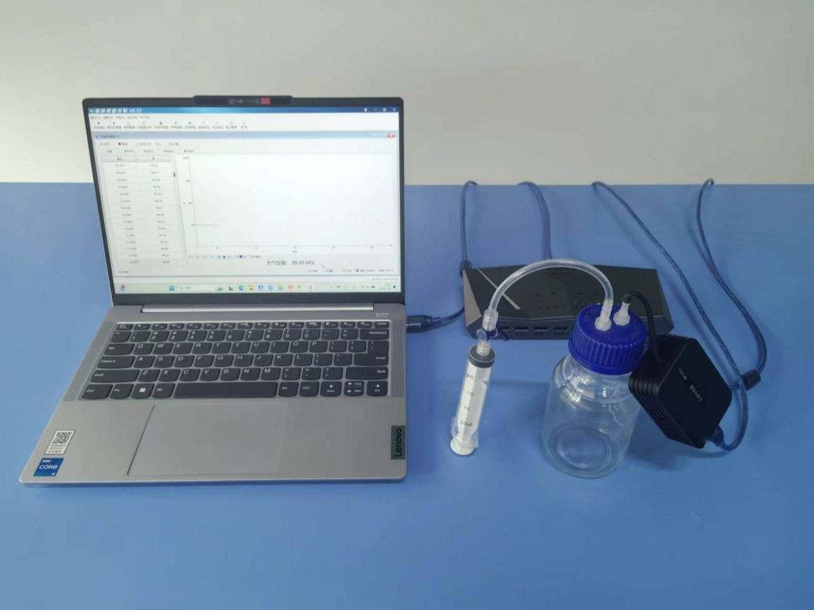
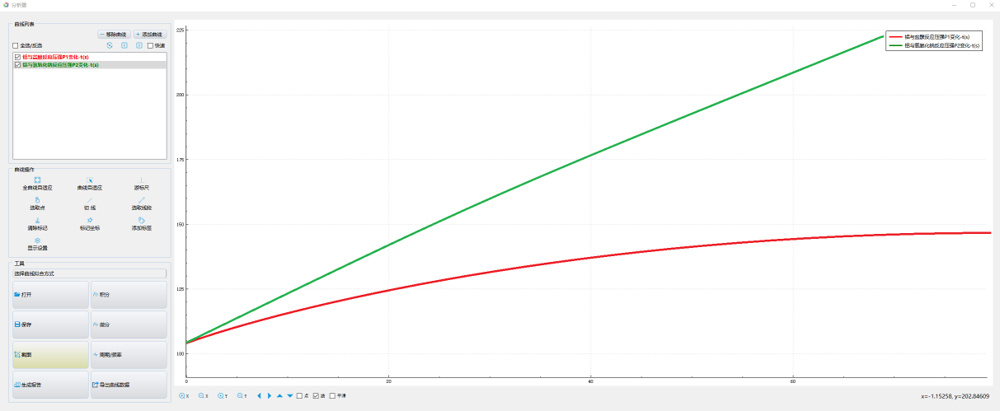

实验五十四 金属铝的双性
【实验目的】
认识金属铝既能与酸反应生成H2，又能与碱反应生成H2的性质。
【实验原理】
金属铝具有活泼金属的性质，能与酸作用产生H2:2AL+6HCl=2AlCl3+3H2↑；而金属铝也能与碱发生反应生成H2:2Al+2NaOH+2H2O=2NaAlO2+3H2↑，因此金属铝是两性金属。本实验用压强传感器检测铝与酸、碱反应时是否有气体产生，验证金属铝的两性金属特性。
【实验器材】
数据采集器、压强传感器、计算机、化学反应速率实验器、金属铝、盐酸（HCl）、氢氧化钠（NaOH）溶液、铁架台、镊子等。
【实验装置图】

【实验操作步骤】
按照实验装置图搭建实验器材，打开实验数据分析软件，软件将自动连接传感器。
关闭化学反应速率上胶管上的阀门和打开其盖子，使用镊子将适量的铝块放入其中，然后拧紧盖子，确保气密性。
取下化学反应速率实验器上的注射器并吸取一管盐酸（HCl）溶液，再链接上化学反应速率实验器上，再打开其上的阀门，然后将盐酸（HCl）溶液全部注射进去，最后再关闭阀门。
等待一段反应时间，即可得到实验数据。
我们可以知道瓶中气压大小实验前是一个固定大小不变的，随着盐酸（HCl）溶液的注入，盐酸与铝反应产生氢气使瓶中气压不断增大。从气压的变化我们可以间接推断出铝可以和盐酸反应。根据一般性规律，推断铝可以加酸反应。
同理，得到铝和氢氧化钠（NaOH）溶液的实验数据。同理也可推理得出铝可以和氢氧化钠（NaOH）反应。根据一般性规律，推断铝可以碱反应。

【拓展】
1.实验只用了一种酸或碱做实验，为了增加可信度，同学们可以尝试用不同的酸或碱做实验看看，能不能验证我们得出的结论？
【注意事项】
注射器和化学反应速率实验使用一次后，需要使用蒸馏水冲洗。
实验前要检查装置的气密性。